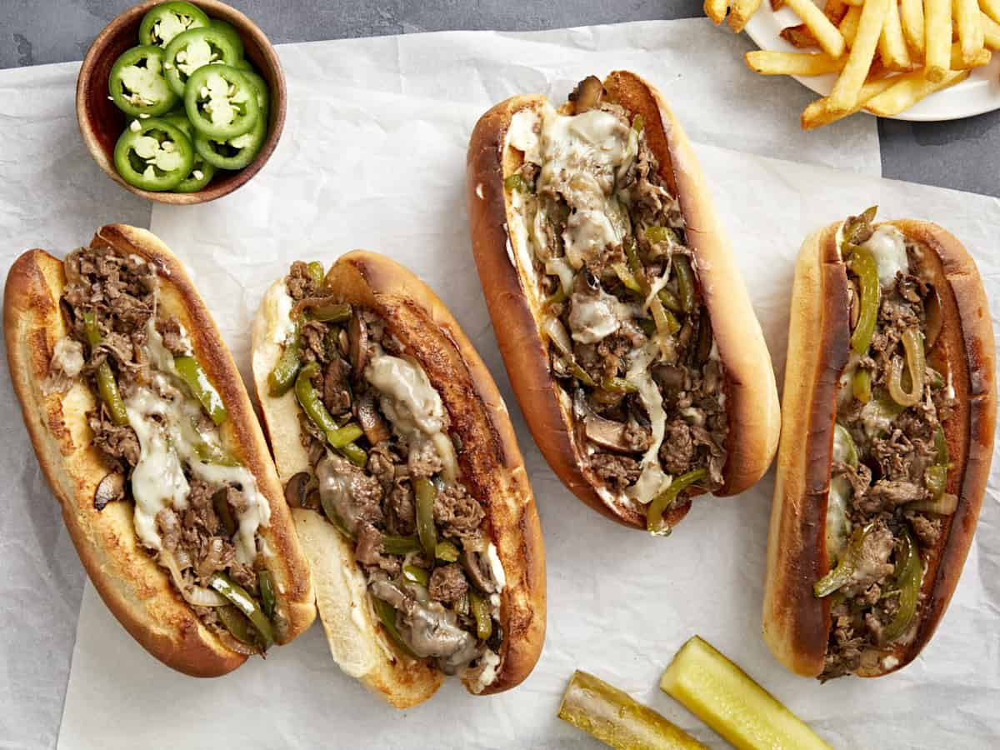

Description
You NEED to try this delicious Philadephia-style cheesesteak! The melty cheese and sirloin beef combination complements the brioche buns so well, can cheat day be everyday?
Ingredients
- 1/2 teaspoon salt
- 1/2 teaspoon black pepper
- 1/2 teaspoon paprika
- 1/2 teaspoon chili powder
- 1/2 teaspoon onion powder
- 1/2 teaspoon garlic powder
- 1/2 teaspoon dried thyme
- 1/2 teaspoon marjoram
- 1/2 teaspoon dried basil
- 1 pound beef sirloin, cut into thin 2 inch strips
- 3 table spoons beef tallow
- 1 onion sliced
- 1 green bell pepper
- 3oz swiss cheese, thinly sliced
- 4 hoagie rolls, split lengthwise
Steps
- Gather all ingredints.
- Mix all seasonings together with basil in a small bowl.
- Place steak in a large bowl; sprinkle seasoning mixture over top and stir to coat.
- Heat 1/2 of the tallow in a skillet over medium-high heat. Add steak; cook and stir to your desired doneness. Transfer cooked steak to a plate.
- Heat the remaining oil in a skillet. Add onion and green pepper; cook until caramelized and tender.
- Preheat the oven on the broiler setting. Divide cooked beef between the bottoms of 4 rolls.
- Layer the sandwiches with onion and green pepper.
- Top with sliced cheese. Place on a cookie sheet.
- Broil in the preheated oven until cheese is melted.
- Fold over the tops of the rolls and serve!